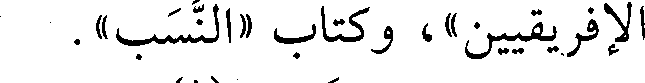
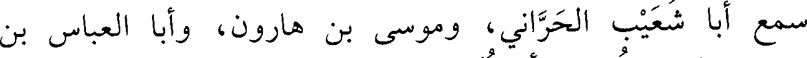
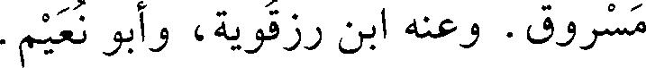

File: 000482.gt.txt (if the image is defective, simply delete all Arabic text and the line will be excluded)

الإفريقيين»، وكتاب «النسب» .
File: 000483.gt.txt (if the image is defective, simply delete all Arabic text and the line will be excluded)

قال ابن الفرضي (1) : بلغني أنه صنف للحكم مئة ديوان، وكان شاعرا
File: 000484.gt.txt (if the image is defective, simply delete all Arabic text and the line will be excluded)

بليغا لكنه يلحن، وكان يتعانى الكيمياء، واحتاج بعد موت الحكم إلى أن
File: 000485.gt.txt (if the image is defective, simply delete all Arabic text and the line will be excluded)

جلس في حانوت يبيع الأدهان. روى عنه أبو بكر بن حوئيل، وغيره.
File: 000486.gt.txt (if the image is defective, simply delete all Arabic text and the line will be excluded)

وتوفي في صفر (2) .
File: 000487.gt.txt (if the image is defective, simply delete all Arabic text and the line will be excluded)

18 - محمد بن الحسن بن سعيد، أبو العباس ابن الخشاب
File: 000488.gt.txt (if the image is defective, simply delete all Arabic text and the line will be excluded)

المخرمي الصوفي الزاهد.
File: 000489.gt.txt (if the image is defective, simply delete all Arabic text and the line will be excluded)

صاحب حكايات عن الشبلي وغيره . وعنه السلمي، والحاكم(3) .
File: 000490.gt.txt (if the image is defective, simply delete all Arabic text and the line will be excluded)

19 - محمد بن الحسين بن محمد بن الحسين، الوزير ظهير الدين
File: 000491.gt.txt (if the image is defective, simply delete all Arabic text and the line will be excluded)

أبو شجاع، حفيد الوزير أبي شجاع الروذراوري البغدادي.
File: 000492.gt.txt (if the image is defective, simply delete all Arabic text and the line will be excluded)

وزر للمسترشد ثم عزل ولزم بيته دهرا في نعمة وعافية.
File: 000493.gt.txt (if the image is defective, simply delete all Arabic text and the line will be excluded)

مات في ذي القعدة، وقد شاخ.
File: 000494.gt.txt (if the image is defective, simply delete all Arabic text and the line will be excluded)

20 - محمد بن حميد بن سهل المخرمي، أبو بكر.
File: 000495.gt.txt (if the image is defective, simply delete all Arabic text and the line will be excluded)

سمع أبا خليفة، وجعفرا الفريابي، والهيثم بن خلف الدوري،
File: 000496.gt.txt (if the image is defective, simply delete all Arabic text and the line will be excluded)

وغيرهم. وعنه الدارقطني، وأبو نعيم، وجماعة.
File: 000497.gt.txt (if the image is defective, simply delete all Arabic text and the line will be excluded)

قال البرقاني: ضعيف.
File: 000498.gt.txt (if the image is defective, simply delete all Arabic text and the line will be excluded)

وقال ابن أبي الفوارس: فيه تساهل شديد(4) .
File: 000499.gt.txt (if the image is defective, simply delete all Arabic text and the line will be excluded)

21 - محمد بن عمر بن محمد بن الفضل، أبو عبدالله الجعفي
File: 000500.gt.txt (if the image is defective, simply delete all Arabic text and the line will be excluded)

البغدادي.
File: 000501.gt.txt (if the image is defective, simply delete all Arabic text and the line will be excluded)

سمع أبا شعيب الحراني، وموسى بن هارون، وأبا العباس بن
File: 000502.gt.txt (if the image is defective, simply delete all Arabic text and the line will be excluded)

مسروق. وعنه ابن رزقويه، وأبو نعيم.
File: 000503.gt.txt (if the image is defective, simply delete all Arabic text and the line will be excluded)

197
File: 000504.gt.txt (if the image is defective, simply delete all Arabic text and the line will be excluded)

سنة ست وستين وثلاث مئة
File: 000505.gt.txt (if the image is defective, simply delete all Arabic text and the line will be excluded)

في جمادى الأولى زفت بنت عز الدولة إلى الطائع لله(1) .
File: 000506.gt.txt (if the image is defective, simply delete all Arabic text and the line will be excluded)

وفيها جاء أبو بكر محمد بن علي بن شاهويه صاحب القرامطة، ومعه
File: 000507.gt.txt (if the image is defective, simply delete all Arabic text and the line will be excluded)

ألف رجل منهم إلى الكوفة، وأقام الدعوة بها لعضد الدولة، وأسقط خطبة
File: 000508.gt.txt (if the image is defective, simply delete all Arabic text and the line will be excluded)

عز الدولة، وكان قدومه معونة من القرامطة لعضد الدولة.
File: 000509.gt.txt (if the image is defective, simply delete all Arabic text and the line will be excluded)

وفيها كانت وقعة بين عز الدولة وعضد الدولة، أسر فيها غلام تركي
File: 000510.gt.txt (if the image is defective, simply delete all Arabic text and the line will be excluded)

لعز الدولة، فجن عليه واشتد حزنه، وتسلى عن كل شيء إلا عنه، وامتنع
File: 000511.gt.txt (if the image is defective, simply delete all Arabic text and the line will be excluded)

من الأكل، وأخذ في البكاء، واحتجب عن الناس، وحرم على نفسه
File: 000512.gt.txt (if the image is defective, simply delete all Arabic text and the line will be excluded)

الجلوس في الدست، وكتب إلى عضد الدولة يسأله رد الغلام إليه،
File: 000513.gt.txt (if the image is defective, simply delete all Arabic text and the line will be excluded)

ويتذلل، فصار ضحكة بين الناس، وعوتب فما ارعوى، وبذل في فداء
File: 000514.gt.txt (if the image is defective, simply delete all Arabic text and the line will be excluded)

الغلام جاريتين عوديتين، كان قد بذل له في الواحدة مئة ألف، فأبي أن
File: 000515.gt.txt (if the image is defective, simply delete all Arabic text and the line will be excluded)

يبيعها، وقال للرسول: إن توقف عليك في رده فزد ما رأيت ولا تفكر فقد
File: 000516.gt.txt (if the image is defective, simply delete all Arabic text and the line will be excluded)

رضيت أن آخذه واذهب إلى أقصى الأرض، فرده عضد الدولة عليه.
File: 000517.gt.txt (if the image is defective, simply delete all Arabic text and the line will be excluded)

وحج بالناس من العراق أبو عبدالله أحمد بن أبي الحسين العلوي،
File: 000518.gt.txt (if the image is defective, simply delete all Arabic text and the line will be excluded)

وحجت جميلة بنت ناصر الدولة ابن حمدان ومعها أخواها إبراهيم وهبةالله،
File: 000519.gt.txt (if the image is defective, simply delete all Arabic text and the line will be excluded)

فضرب بحجتها المثل، فإنها استصحبت أربع مئة جمل، وكان معها عدة
File: 000520.gt.txt (if the image is defective, simply delete all Arabic text and the line will be excluded)

محامل لم يعلم في أيها كانت، وكست المجاورين، ونثرت على الكعبة لما
File: 000521.gt.txt (if the image is defective, simply delete all Arabic text and the line will be excluded)

رأتها عشر آلاف دينار، وسقت جميع أهل الموسم السويق بالسكر والثلج -
File: 000522.gt.txt (if the image is defective, simply delete all Arabic text and the line will be excluded)

كذا قال أبو منصور الثعالبي، فمن أين لها ثلج؟ - وقتل أخوها هبة الله في
File: 000523.gt.txt (if the image is defective, simply delete all Arabic text and the line will be excluded)

الطريق، وأعتقت ثلاث مئة عبد ومئتي جارية، وأغنت المجاورين
File: 000524.gt.txt (if the image is defective, simply delete all Arabic text and the line will be excluded)

بالأموال.
File: 000525.gt.txt (if the image is defective, simply delete all Arabic text and the line will be excluded)

قال أبو منصور الثعالبي: خلعت على طبقات الناس خمسين ألف
File: 000526.gt.txt (if the image is defective, simply delete all Arabic text and the line will be excluded)

ثوب، وكان معها أربع مئة عمارية لا يدرى في أيها كانت، ثم ضرب الدهر
File: 000527.gt.txt (if the image is defective, simply delete all Arabic text and the line will be excluded)

ضربانه، واستولى عضد الدولة على أموالها وحصونها وممالك أهل بيتها
File: 000528.gt.txt (if the image is defective, simply delete all Arabic text and the line will be excluded)

ومسح النبي صعلم صدري، فزال عني الألم، وانتبهت ببرد ريق أبي بكر،
File: 000529.gt.txt (if the image is defective, simply delete all Arabic text and the line will be excluded)

فناديت، فقام إلي رجل، فأخبرته، فأسخن لي ماء، فتوضأت به، وجاءني
File: 000530.gt.txt (if the image is defective, simply delete all Arabic text and the line will be excluded)

بثياب ونفقة وقال: هذا فتوح، فقمت فقال: أين تمر الله الله، فجئت
File: 000531.gt.txt (if the image is defective, simply delete all Arabic text and the line will be excluded)

المأذنة وأذنت الصبح: « الصلاة خير من النوم » ، ثم قلت قصيدة في